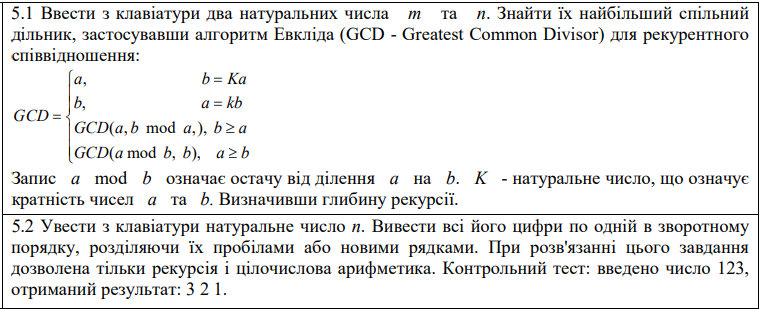

Функціональне програмування
Факультет інформаційних технологій
Кафедра програмних систем та технологій
Лабораторна робота 1
Використання рекурсії для організації повторювальних процесів
Колоцей Денис Дмитрович
Група: ІПЗ-44мс, 4-й курс
Викладач: Ніколаєнко А.Ю.
2024
Мета
Сформувати декларативне мислення в галузі програмування завдяки використанню чистих функцій, рекурсій замість циклів, запобіганню даних, що змінюються. Опанувати застосування рекурсивних функцій для обчислювальних процесів.
Варіант 5
Хід роботи
Обгрунтування вибору мови програмування
Було обрано мову програмування Scheme. Scheme є функціональною мовою програмування, яка підтримує функції вищого порядку, замикання, рекурсію та інші функціональні концепції. Це робить її потужним інструментом для вирішення складних завдань, особливо в областях, де функціональне програмування є важливим, наприклад, в обробці даних. Вона відома своєю простотою та мінімалізмом в синтаксисі. Вона має дуже невелику кількість ключових слів і структурних елементів мови. Це дозволяє легко розуміти і змінювати код, що робить її відмінним вибором для навчання програмуванню та швидкого прототипування.
Завдання 1
Код
Посилання(define (gcd a b counter)
(if (= b 0)
(list a counter)
(gcd b (modulo a b) (+ counter 1))))
(define m (read))
(define n (read))
(define result (gcd m n 0))
(display "Найбільший спільний дільник m і n: ")
(display (car result))
(newline)
(display "Глибина рекурсії: ")
(display (cadr result))
Результат

Оцінка достовірності результату
При заданих вхідних даних, чисел 34 та 32, найменший спільний дільник дорівнює 2. Перевірка на калькуляторі показала, що правильна відповідь.
Завдання 2
Код
Посилання(define (printDigitsReverse n)
(if (< n 10)
(display n)
(begin
(display (remainder n 10))
(display " ")
(printDigitsReverse (quotient n 10))
)))
(display "Введіть натуральне число: ")
(define num (read))
(printDigitsReverse num)
(newline)
Результат

Оцінка достовірності результату
При заданих вхідних даних, число 1234, правильним результатом буде "4 3 2 1", отже програма виконалася правильно.
Висновок
У рамках лабораторної роботи було реалізовано два завдання на мові програмування, які демонструють застосування рекурсії та цілочислової арифметики. У першому завданні було обчислено найбільший спільний дільник (GCD) для двох натуральних чисел m та n, використовуючи алгоритм Евкліда. За допомогою рекурентного співвідношення та остачі від ділення було знайдено GCD для цих чисел. Рекурсивна функція була реалізована з використанням Scheme. Також була визначена глибина рекурсії, яка допомагає зрозуміти, як довго функція працює та скільки рекурсивних викликів вона генерує. У другому завданні вводилося натуральне число n, та за допомогою рекурсії та цілочислової арифметики були виведені всі його цифри у зворотному порядку, розділені пробілами або новими рядками. Це завдання показує, як рекурсія може бути використана для роботи з числами та рядками. Лабораторна робота демонструє важливі аспекти програмування, такі як рекурсія, робота з числами та рядками, і розв'язання математичних задач з використанням алгоритмів та арифметики.